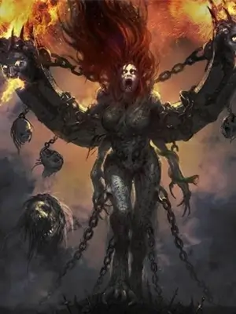
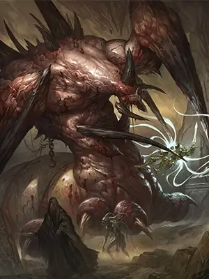
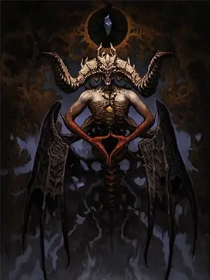
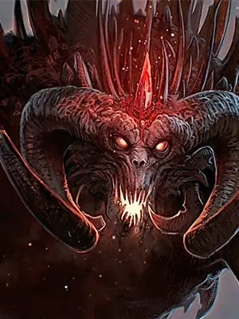
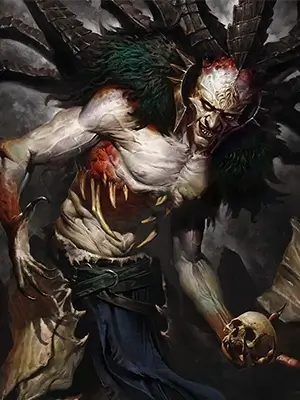
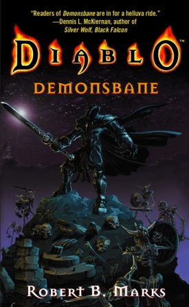
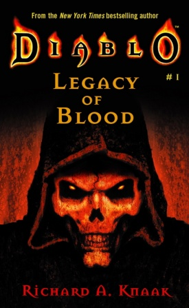
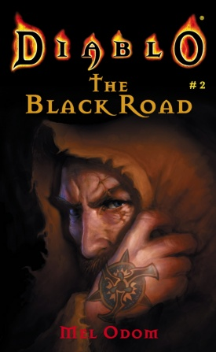
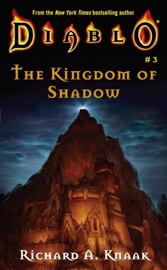
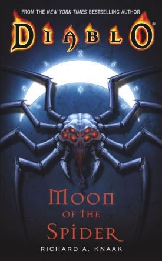

Desde el principio de los tiempos, las huestes angélicas de los Altos Cielos y las hordas demoníacas de los Infiernos Ardientes han estado enfrascadas en una lucha por el destino de toda la creación. Esa lucha ahora ha llegado al reino de los mortales... y ni el Hombre ni el Demonio ni el Ángel saldrán ilesos... Lo que iba a ser una última batalla victoriosa contra la invasión demoníaca de Entsteig se ha convertido en una masacre. Solo queda Siggard, un guerrero incapaz de recordar las horas finales de la batalla, impulsado por la carnicería que experimentó y el vacío en su mente para vengar a los asesinados por el ejército de la oscuridad. Mientras caza al señor de los demonios que destrozó todo lo que amaba, Siggard también reconstruye la verdad de esa terrible batalla... y descubre que su pesadilla apenas comienza.

Introduccion
Diablo es una serie de videojuegos pertenecientes al género de acción, ROL, y de Videojuegos de mazmorras desarrollada por Blizzard North y continuada por Blizzard Entertainment después del cierre del estudio del norte en 2005. La serie se compone de cuatro videojuegos principales: Diablo I, Diablo II, Diablo III y Diablo IV.
La serie está ambientada en el mundo de fantasía de Santuario. Los tres videojuegos de la serie tienen lugar en áreas geográficas similares, con varias áreas comunes, incluida la ciudad de Tristram y la región alrededor de Monte Arreat. La configuración adicional es proporcionada por los Cielos Altos y los Infiernos Ardientes, dos reinos separados vinculados al Santuario. La serie se centra en la batalla entre los humanos que viven en Santuario y los Demonios primarios, demonios que son liderados por Diablo, el principal antagonista de la serie. Los humanos son ocasionalmente ayudados por ángeles, especialmente el arcángel de la justicia, Tyrael. Los personajes en el mundo de Santuario son principalmente humanos, ángeles y varias clases de demonios y monstruos.
Juegos
Diablo
Diablo primero trató de poseer al Rey Leoric, el gobernante local de Tristán, pero debido a su estado debilitado y a la fuerte voluntad del Rey, Diablo no pudo obtener el control total. Por lo tanto el demonio abandonó el cuerpo del rey, lo que a su vez lo dejó loco y sin sentido. Lazarus, a continuación, secuestra el hijo menor del rey Leoric, el príncipe Albrecht. Lo lleva a las profundidades de las catacumbas, donde inserta la piedra de alma del demonio en la frente del príncipe. Esto permitió a Diablo para poseer y deformar el príncipe, logrando así una forma material. Diablo puede tener un cuerpo, pero él está lejos de su plena potencia, por lo que espera su oportunidad y convoca innumerables hordas de demonios, que infestan el complejo subterráneo entero, para convertir poco a poco la región en un puesto de avanzada del infierno. El enloquecido rey Leoric acusa a la gente del pueblo de Tristán del secuestro de Albrecht, y ordena la ejecución de varias personas. Sus leales caballeros tratan de calmarlo, pero como el enloquecido rey haperdido completamente la cordura, se ven obligados a matarlo. Sus últimas palabras son una terrible maldición, condenando a los caballeros a la servidumbre impía. Mientras tanto, Lazarus emerge de las profundas catacumbas, reúne a la gente del pueblo y bajo la misión de salvar al príncipe los adentra en las catacumbas. Esto resultó ser una trampa, en vez de buscar al príncipe, Lazarus los conduce a la guarida de The Butcher. Muchos de los habitantes del pueblo son asesinados por los demonios. Después Lazarus huye más profundamente en el calabozo subterráneo. Al final del juego, el héroe quita la piedra del alma de la cabeza de Diablo. Para sorpresa del jugador, Diablo comienza a derretirse revelando el cuerpo del Príncipe Albrecht por debajo. El héroe entonces se perfora la cabeza con la Piedra del Alma, intentando contener al Señor del Terror. Sin embargo, el final del juego sugiere un resultado más oscuro. La escena final muestra al héroe, envuelto en una sombría capa encapuchada.
Diablo II
La historia de Diablo II se lleva a cabo poco después del final de la original Diablo. Al final del Diablo, Diablo, Señor del Terror fue derrotado por un héroe mortal. El héroe que mató a Diablo, impulsa la piedra de alma de Diablo en su propia cabeza en un intento de contener Diablo en su propio cuerpo. Después de este evento, el héroe es rápidamente corrompido por el Diablo y pierde el control del alma de Diablo lentamente. En la apertura cinematica del Diablo II, Marius, el narrador de la historia, los testigos del héroe caído perder el control totalmente, desatando los demonios del infierno en una taberna . Mario es el único sobreviviente, y él se siente obligado a seguir el Vagabundo por razones que él mismo no entiende. El personaje del jugador nuevo es un héroe diferente siguiendo la estela de la destrucción, persiguiendo el Nómada de la Oscuridad, con la esperanza de poner fin al señor demonio dentro de él. El nuevo héroe en última instancia, se pone al día con el vagabundo de la ciudad de Kurast, pero es incapaz de detenerlo. El resto de la historia se revela a través de los cuatro actos, ya que el jugador no se enfrenta sólo el señor de los demonios Diablo, pero dos nuevos villanos principales, sus hermanos, compañeros igualmente malévolos demonios mayores Mephisto, Señor del Odio y Baal, Señor de la Destrucción. Diablo está determinado a liberarse de su piedra de alma cárcel, que se impuso a los tres hace mucho tiempo, y de la que Diablo logró liberarse en el primer juego. El héroe viaja a través de diferentes tierras para frustrar las fuerzas de las tierras infernales a partir de la conquista del mundo conocido como Santuario.
Diablo III
El mundo fue salvado de su destrucción hace veinte años por un puñado de héroes sin nombre en Diablo y Diablo II, héroes que, después de haber sobrevivido al ataque por los ejércitos de los infiernos, han vuelto locos de sus sufrimientos. Corresponde a una nueva generación de héroes para hacer frente a las fuerzas del mal que amenazan al mundo del Santuario. Los jugadores tendrán la oportunidad de explorar lugares conocidos como Tristán, en el oscuro mundo fantastico de Santuario. Han pasado dos décadas desde la última vez que los señores infernales -Diablo, Mefisto y Baal- deambularon por el mundo de Santuario, sometiendo a la humanidad a su limpio antojo. Sin embargo, la memoria de aquellos que lucharon frente a frente contra los ejércitos de la perversidad se desvanece lentamente y las heridas del alma aún escuecen. Cuando Deckard Caín regresa a las ruinas de la catedral de Tristán buscando signos para derrotar el despertar del mal, un furioso heraldo del Apocalipsis cae de los cielos estrellándose en el mismo lugar por el que Diablo había penetrado en el mundo. Este fuego de los cielos reaviva antiguas perversidades y anuncia a todos los héroes de Santuario que ha llegado la hora de defender otra vez el mundo que pertenece a los mortales frente a los poderes que emanan de los Infiernos Abrasadores. Deckard Cain, que ha aparecido en los dos juegos anteriores es ahora acompañado por su hijastra, Leah, un nuevo personaje que acompaña al héroe en misiones de vez en cuando.
Diablo Inmortal
Ante todo, Diablo Immortal narra la historia de una campaña desesperada: la de contener la Piedra del Mundo quebrada. También es la historia de quienes vivían en aquella época, rostros conocidos como el de Deckard Caín, Charsi, Kashya, Akara, Xul y Valla, así como de personajes que no conocíamos aún. Por último, es la historia de Westmarch, urbe principal del juego y uno de los pocos bastiones estables que quedan en Santuario.
Personajes
Diablo II: Lord Of Destruction
Amazona
La amazona es una poderosa mujer guerrera de los Askari, quienes pertenecen a las bandas nómadas que deambulan cerca del Mar del Sur. El constante movimiento de estos grupos a menudo les pone en conflicto con otros pueblos, debido a lo cual la Amazona está acostumbrada a defenderse por sus propios medios. Este estilo de vida ha hecho de ella ferozmente independiente y capaz de superar graves dificultades y los viajes. Mientras que su habilidad con los del arco, su rivales son los pícaros, el Amazonas es también experto en el uso de lanza y Jabalinas, así como en el combate mano a mano. Armas del Amazonas son temas que sólo pueden equipar las Amazonas. Estos son arcos especiales, jabalinas y lanzas. El Amazonas es muy solicitado como mercenario, en el que el tipo de servicio que va a ser leal, siempre y cuando sus fines también se sirven.
Barbaro
El Bárbaro, miembro de una de varias tribus, al margen de la civilización, rechaza la influencia de aquellos que él ve como blandos y débiles.La guerra incesante de los clanes y la constante lucha por sobrevivir en el desierto hostil son evidentes en el robusto y poderoso marco del bárbaro.Aunque quizás carezca de la sofisticación de sus contemporáneos civilizados, el bárbaro tiene una conciencia aguda de su entorno.Debido a su creencia chamánica en los poderes animales con los que se identifica, el bárbaro a veces se asocia con historias de licantropía. De hecho, él cree que puede mejorar sus excelentes tácticas de batalla invocando a los espíritus animales totémicos para infundirle fuerzas y habilidades sobrenaturales.
Nigromante
Tal y como cabría esperar, los devotos de la magia son un grupo segregado. Se muestran tan suspicaces ante los aprendices de las disciplinas rivales como un laico ante todos los practicantes de la magia arcana. Sin embargo, ninguno esta tan extensamente calumniado y malinterpretado como el grupo de los Sacerdotes de Rathma. Al igual que ocurre con la mayor parte de los que utilizan la magia, los sacerdotes del culto de Rathma habitan las lejanas junglas del Este. Residen en una enorme ciudad subterranea situada en lo más profundo de dichas junglas. Sin embargo, su particular ubicacion geografica está especialmente recluida, lo que impide su integracion en un clan de magia formal. Pero tambien es este aislamiento lo que les ha permitido dedicarse a su singular tipo de ciencia arcana.
Paladin
Los Caballeros de la Frontera Oeste, que talados los ejércitos del poderoso Leoric son puros de corazón y seguir de cerca las enseñanzas de Zakarum, la Religión de la Luz .Un guerrero listos para la batalla para quienes la fe es un escudo, las peleas de paladín de lo que él cree que es correcto. Su constancia le da facultades para otorgar bendiciones a sus amigos y causar la justicia cruel de los enemigos. Hay quienes llaman el Paladín un fanático sobreexcitada, pero otros reconocen en él la fuerza y la bondad de la Luz.
Hechicera
El clan de hechizeras de Zann Esu es uno de los más veteranos de los clanes antiguos, aunque poco se sabe de él hoy en día. Hace siglos, los catorce poderosos clanes de brujas de Esu se reunieron por primera vez desde hacía generaciones. Lo que discutieron no se conoce, pero las brujas abandonaron su estilo de vida anterior y, como grupo, desaparecieron en las selvas del Este.
Asesina
También conocido como el Viz-Jaq'taar o la Orden de los Asesinos Mago, el asesino pertenece a una antigua orden fundada originalmente por el clan Vizjerei para cazar y eliminar los magos pícaros en sus propias filas. Para emplear las disciplinas secretas para combatir y resistir a los poderes mágicos de su elusiva presa, la bolsa de trucos del asesino incluye trampas y otros artefactos infernales, artes marciales, y poderosas habilidades mentales. La gente común no sabe nada de los asesinos, pero son ampliamente temidos y respetados por todos los que emplean las artes mágicas
Druida
Los druidas son una raza de nómadas poetas-guerreros-reyes. Expulsados de su tierra natal hace mucho tiempo por sus hermanos bárbaros, las tribus de druidas viven principalmente en los bosques del norte. Ellos rechazan el uso de la magia tradicional, o Dubhdroiacht, como ellos lo llaman. En su lugar, practican una forma de magia basada en su estrecho vínculo con la naturaleza y el mundo de Santuario. El uso de su parentesco íntimo, así como los secretos místicos pasan de generación en generación, se puede convocar a los elementos de fuego, tierra y viento para cumplir sus órdenes, y el mando de las criaturas del bosque que les ayuden en la batalla. El cambio de sus formas humanas en la de las fieras, les da habilidades que van más allá los de los demás mortales.
Enemigos
Diablo II: Lord Of Destruction
Andariel
Andariel es una de los cuatro males menores, y la única mujer de los siete poderosos del infierno. Ella es una Succubus del submundo que ha sido enviada por Diablo para invadir la Ciudadela de la Hermandad del Ojo Ciego, con el fin de cerrar el paso a través de las montañas en la región oriental de tierras de Aranoch, de modo que nadie sería capaz de seguir Diablo en su disfraz del Errante Oscuro y le impida la liberación de su hermano Baal desde la Tumba de Tal Rasha. Se dice que andariel fue rechazada del infierno y expulsada. Durante el asalto al Monasterio de las Arpías, muchas hermanas fueron asesinadas y otras fueron corrompidas y se convirtieron al servicio de la Reina Succubo,como Cuervo Sangriento. Los sobrevivientes huyeron y el monasterio se convirtió en refugio de todo demonio invocado por andariel, por todo el desierto, aun en estas condiciones se logró establecer el Campamento de la Arpías. Ella es conocida en el infierno como la Doncella de la Angustia, y es la hija de Lilith y la nieta de Mefisto Señor Del Odio.
Duriel
"Duriel es el gemelo de Andariel. Creo que conspiraron juntos para ayudar a Diablo a liberar a Mephisto y Baal, aunque ambos habían apoyado a los males menores en el pasado. El Señor del Dolor fue encontrado custodiando la prisión de Baal, la tumba de Tal Rasha cuando fue asesinado por los héroes".
Mephistos
Mephisto, el Señor del Odio, es el más antiguo de los tres demonios mayores, se especula, a menudo, con la posibilidad de que sea su líder. Parece ser el más inteligente, estratégico y analítico de los tres (siendo esto paradójico, pues en el juego es el más débil). También es conocido por ser el primer demonio en tener hijos, es padre de Lucion y Lilith. Mephisto, uno de los tres hermanos mayores junto a Baal y Diablo, también conocido como el Señor del Odio, había sido encerrado en Kurast por la hermandad de los Horadrim, que tras conseguir encerrarlo en una de las piedras del alma, esta fue llevada a Kurast, en concreto fue encerrado bajo la Torre Guardian en la ciudad Templo de Travincal, su entrada fue sellada bajo el orbe impositor y había quedado custodiado por el Consejo Superior de Zakarum. Pero poco a poco Mefisto consiguió corromper a todo el consejo Zakarum excepto a uno, Khalim. A éste lo despedazaron siguiendo las órdenes de Mefisto y lo repartieron por todo Kurast con la esperanza de que nunca puediese revelar la forma de llegar a Mefisto. Desde allí abajo gobernaba sobre el consejo Zakarum y estos acataban todas sus órdenes.
Diablo
Diablo, el señor del terror, es un demonio primario y enemigo final tanto de Diablo como de Diablo II y Diablo III. Sus hermanos son Baal y Mephisto. En Diablo III se supone que es mucho más poderoso que en su estado original, ya que, en su ser encierra el poder de los 7 demonios, cuales estaban encerrados en la Piedra Esencial Negra. Su aspecto también es el resultado de la mezcla de los males, y tomando el cuerpo de Leah para lograr su transformación.
Baal
Después de que Mefisto fuera capturado en Kehjistan, Baal huyó, pero fue seguido rápidamente hasta Aranoch y se escondió en Lut Gholein. Los cazadores Horadrim esperaron hasta que salió de la ciudad en la que estaba y lo arrinconaron en el desierto. Baal fue derrotado, pero cuando iba a ser encerrado en su Piedra del Alma, su naturaleza destructiva rompió la piedra. Incapaz de contener el Primer Mal, Tal Rasha, el líder de la orden de los Horadrim, tomó la tarea de capturar de Baal, y se ofreció para completar la prisión con su propio cuerpo. Él teorizó que una persona de voluntad fuerte sería capaz de contener el mal del demonio. Para evitar que liberasen a Baal, el Horadrim Tal Rasha fue encadenado en una de las siete tumbas idénticas ocultas en el desierto.
Comics y Novelas
Diablo II
-
Demonsbane
 -
Legacy of Blood
Desde el principio de los tiempos, las huestes angelicales de los Altos Cielos y las hordas demoníacas de los Infiernos Ardientes han estado enzarzadas en una lucha por el destino de toda la Creación. Esa lucha ahora ha llegado al reino de los mortales... y ni el Hombre ni el Demonio ni el Ángel saldrán ilesos... Norrec Vizharan se ha convertido en una pesadilla viviente. Mientras busca un tesoro mágico, el soldado de la fortuna descubre un artefacto más allá de sus sueños más salvajes: la antigua armadura de Bartuc, el legendario Señor de la Guerra de la Sangre. Pero el alma de la armadura misteriosa. Ahora, perseguido por demonios que codician la armadura oscura para sus propios recursos, Norrec debe superar una sed de sangre que apenas puede controlar y descubrir la verdad sobre su aterradora maldición antes de perderse en la oscuridad para siempre...
-
The Black Road
Desde el comienzo de los tiempos, las huestes angelicales de los Altos Cielos y las hordas demoníacas de los Infiernos Abrasadores han estado inmersos en una lucha por el destino de toda la Creación. Esa lucha ha llegado al reino mortal ... y ni Hombre ni Demonio ni Ángel quedará intacto ... Darrick Lang regresa a casa. Hace años que dejó la ciudad de Bramwell para recorrer el mundo como un soldado de fortuna y campeón del reino. Pero Bramwell ya no era como él la recordaba. Algo oscuro y terrible ha atrapado a la gente del pueblo, algo muy antiguo y muy paciente, enredando a inocentes en una telaraña de malicia y de profanación de la misma tierra. Ahora ese mismo poder llama a Darrick ... y su única esperanza puede ser la de recorrer el mismo camino peligroso de la condenación.
-
The Kingdom of Shadow
Desde el comienzo de los tiempos, las huestes angelicales de los Altos Cielos y las hordas demoníacas de los Infiernos Abrasadores, han estado luchando por el destino de toda la Creación. Esa lucha ha llegado al reino mortal ... y ni Hombre ni Demonio ni Ángel quedará intacto ... Ureh, considerado por muchos haber sido una puerta de entrada a la Altos Cielos. Se cree que cada dos mil años, cuando las estrellas se alinean y la sombra del Monte Nymyr recae sobre las ruinas, y todas sus riquezas perdidas se revelan a aquellos lo suficientemente valientes como para buscarlas. El hechicero Vizjerei Quov Tsin, ha venido a presenciar el renacimiento de Ureh por sí mismo. Pero lo que aguarda a Tsin y su banda de mercenarios contratados no es nada parecido a lo que esperaban.
-
Moon of the Spider
Desde el principio de los tiempos, las huestes angelicales de los Altos Cielos y las hordas demoníacas de los Infiernos Ardientes han estado enzarzadas en una lucha por el destino de toda la Creación. Esa lucha ahora ha llegado al reino de los mortales... y ni el Hombre ni el Demonio ni el Ángel saldrán ilesos... Llevado por las pesadillas a las ruinas de una tumba misteriosa, Lord Aldric Jitan espera despertar un terrible mal que ha estado dormido desde la caída de Tristram. Atraído por la creciente oscuridad en la tierra, el enigmático Nigromante, Zayl, tropieza con el plan de Jitan, sin saber que uno de sus propios hermanos ha puesto en marcha estos terribles eventos. Ahora, cuando sale la Luna celestial de la Araña, el infame demonio, Astrogha, se prepara para desatar a sus secuaces sobre Santuario.